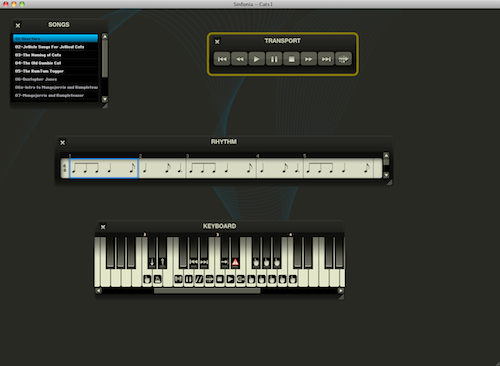
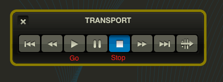
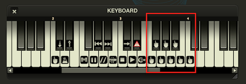
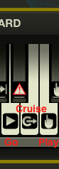

Quick Start
Setup Wizard
The Setup Wizard will run automatically the first time you launch Sinfonia. It will detect and allow you to select your MIDI input and audio output devices. For more information on the Setup Wizard, click here.
Default Windows
The first time you launch the program, you will see a screen with four windows:
- Transport
- Rhythm
- Keyboard
- Song
Default Windows |
|  |
This is just a small subset of the available Sinfonia windows. It's enough to get you going. It also illustrates one of the design principles: you will most likely use Sinfonia in an orchestra pit environment, often on a laptop with limited screen real-estate. The idea is to call upon windows only when you really need them and otherwise hide them so they don't clutter your screen.
The four windows we established in this default view represent one opinion on the core items people would want to see while performing. But of course, depending on your taste and the way you like to work, you might prefer to see a different layout.
- To open a window, select menu Windows → Show/Hide Windows.
- To close a window, click the x in its upper left corner - or select menu Windows → Show/Hide Windows.
- Drag the windows to position them anywhere on your screen.
- Most windows can also be resized using the resize handle in the lower right corner.
Basics
Transport
If you want to want to hear music fast and just want a quick, no frills performance, you can use the Transport window as you would most music devices (with the benefit of a few extra bells and whistles).
Transport |
|  |
Click the Go triangle to set the music in motion. The Stop square will stop playback.
Playing Sinfonia
The Transport window is good for quick tests, but we hope you will use that sparingly. Sinfonia® is actually an instrument, meant to be played in real time. It is not intended as a playback device like a CD or MP3 player. The true benefit of Sinfonia is that you can move with the ebb and flow of the performance, reacting to every situation, from a subtly lengthened pause to an extreme stage mishap. To get the most out of its expressive potential. you should play Sinfonia® live at all times.
You may find it helpful to print out a set of keyboard labels to indicate which keys are mapped to which Sinfonia® functions. You can download a set of labels here.
The most basic way to play Sinfonia® is through the Play keys. By tapping the Play keys at your desired tempo, as you would a piano, you propel the song according to your individual interpretation. The process is analogous to conducting in the traditional sense; as you beat time, Sinfonia® responds. You can speed up and slow down to follow the performance. You can create deep rubato passages or taut accelerandos. 'Playing' is the essential way to breathe life into Sinfonia®.
So for starters, try using the Play keys to perform some songs. By default, you'll see several Play keys assigned in the Keyboard window. These are designated by the pointed finger icon.
Play Keys |
|  |
Play the rhythm notated in the Rhythm window. Notice how a blue highlight and cursor progresses to indicate where you are in the score.
Rhythm Window |
 |
Many functions in Sinfonia can also be controlled from the QWERTY Keyboard. Try playing some more from your space bar. This is also worth noting as a backup technique. If something were to go wrong with your MIDI keyboard during to performance (i.e. someone accidentally kicks out the cord), you could quickly switch over to the space bar to carry on with the show.
Simple Navigation
The Songs window displays your tracklist for the currently loaded show. You can jump to various songs within the show by clicking on them with the mouse, or by using the Page Down/Page Up keys on your QWERTY keyboard.
To jump to a specific spot within a song, you can simply type in the measure number on your QWERTY keyboard. Hit return once to "arm" the relocation, and once more to activate it. (This is done to make relocations during live performances easier and more effective).
Go, Play, and Cruise
Sinfonia® has three basic play modes: Go, Play, and Cruise.

Go: "Go" will perform the song at the pre-programmed tempo. Please note, this is not the recommended way to use Sinfonia®, but is included as a matter of convenience.
Play: When you "play" Sinfonia®, tempo changes are immediate and you can start and stop on a dime, just like you would if you were playing any other musical instrument.
Cruise: "Cruise" is sort of a hybrid of "Go" and "Play". You still manipulate the tempo in real-time, but a cruise tempo is established with each tap. As such, you may not have as much control over big changes in the way you do with "play" mode (you can think of it in terms or turning a big a ship). But "cruise" mode can be useful for long stretches of songs where the tempo is not going to change drastically. Simply tap out the tempo using the "Play" keys, and switch to "Cruise" once the tempo is set. As you can to tap the "cruise" key(s), the tempo is adjusted. When you lift off "cruise", Sinfonia® will now continue along in the set tempo until you start using the "Play" keys again.